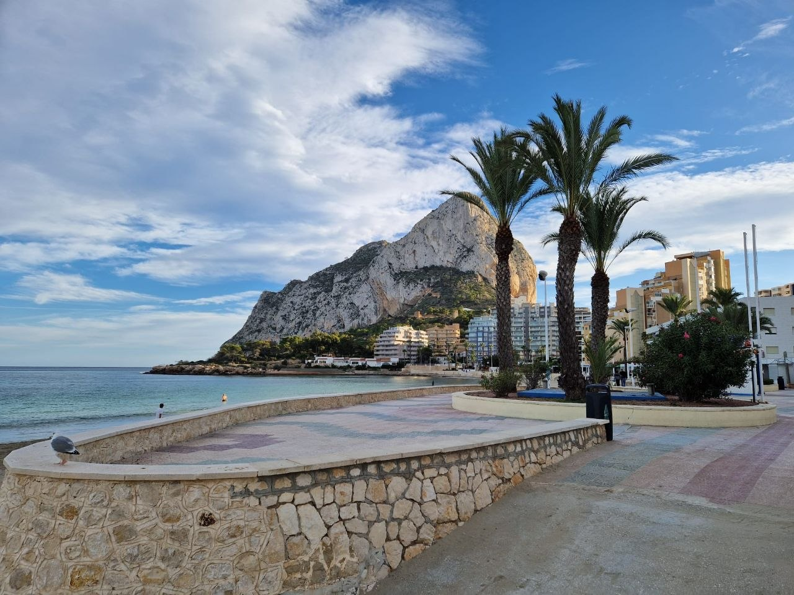

Блог
Знакомство. Виза цифрового кочевника в Испанию
Блог: https://ola-espanola.github.io/blog/
Telegram-канал: https://t.me/ola_espana

Привет! Я Оля. Живу в Испании четвертый год, работаю в IT и помогаю тем, кто готовит документы на визу цифрового кочевника.
В этом блоге буду разбирать подачу спокойно и по делу: кому подходит этот ВНЖ, какие документы действительно нужны и где обычно возникают сложности.
Кому подходит виза номада
Это вариант для граждан стран вне ЕС, которые работают удаленно на иностранную компанию или оказывают услуги иностранным клиентам по договору. Работа должна быть реальной, постоянной и выполняться дистанционно. Доход, квалификацию или опыт, отношения с компанией или клиентами, а также медицинское и социальное покрытие нужно подтвердить документами.
Для работы в найме и для работы по контракту детали различаются, но логика одинаковая: вы показываете не намерение когда-нибудь начать работать, а уже существующую удаленную работу.
Это не шенген
Виза номада и разрешение на проживание дают право жить и работать в Испании. Это не туристический шенген: после переезда нужно выполнять условия ВНЖ, жить в Испании, платить налоги и подавать обязательные декларации. Если основания исчезают или обязательства не выполняются, при проверке ВНЖ могут отозвать.
О документах и «стратегиях»
Вокруг визы появилось много посредников. Некоторые предлагают «разработать персональную стратегию» или обещают решить вопрос красивой упаковкой документов. Помощь с порядком бумаг может быть полезной, но она не заменяет реальные основания: работу, доход, договоры и страховое покрытие.
Не стоит строить подачу на справках и договорах, которые не отражают реальную ситуацию. UGE может запросить дополнительные подтверждения, а при продлении снова проверяют, что условия сохраняются. Надежная подача - это понятный пакет документов, который можно объяснить без легенды.